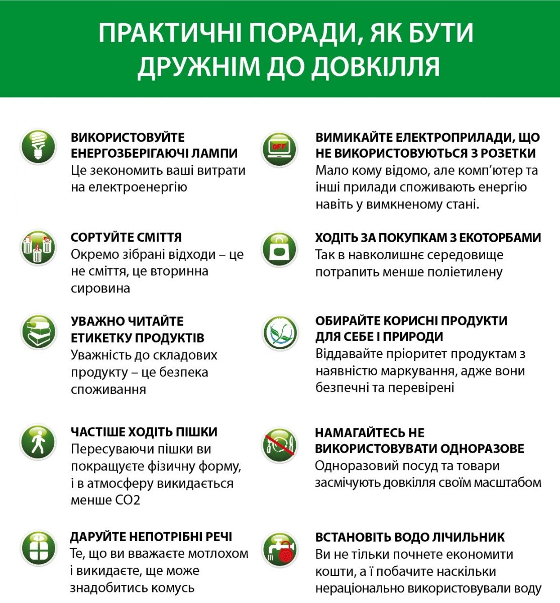

Поради щодо збереження довкілля

- Перевіряйте енергозбереження у вашому будинку: Вимикайте електроприлади, коли вони не використовуються, та замінюйте звичайні лампочки на енергозберігаючі.
- Сортуйте відходи: Розділяйте пластикові, паперові та металеві відходи для подальшої переробки. Це дозволяє зменшити навантаження на сміттєзвалища і заощадити природні ресурси.
- Зменшуйте використання одноразових виробів: Обирайте багаторазові сумки, пляшки та контейнери. Уникайте пластикових пакетів і посуду, що не підлягає переробці.
- Садіть дерева та кущі: Дерева поглинають вуглекислий газ, забезпечують тінь і підтримують біорізноманіття. Більше зелених насаджень на вулицях знижують рівень забруднення повітря та шуму.
- Обирайте екологічно чисті транспортні засоби: Використовуйте велосипеди, ходіть пішки або їздьте на електричних авто або громадському транспорті, щоб знизити рівень забруднення повітря.
- Зменшуйте споживання води: Використовуйте водозберігаючі пристрої для кранів і душів, а також обирайте економічні побутові прилади, які споживають менше води.
- Підтримуйте та поширюйте ініціативи з охорони природи: Беріть участь у місцевих еко-акціях, таких як прибирання парків, озеленення територій або організація збору відходів для переробки.
- Обирайте продукти з екологічною упаковкою: Купуйте товари, упаковані в матеріали, які можна переробити або які мають менший вплив на довкілля, такі як папір чи біорозкладні пакети.
- Зменшуйте використання хімічних добрив та пестицидів: Це допоможе уникнути забруднення ґрунтів і водних ресурсів. Використовуйте органічні добрива та натуральні методи боротьби з шкідниками.
- Підтримуйте сталий розвиток: Обирайте продукти, які виготовлені з урахуванням сталого використання ресурсів та енергозбереження, і підтримуйте компанії, що дотримуються еко-стандартів у своєму виробництві.